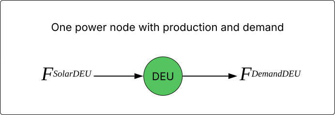
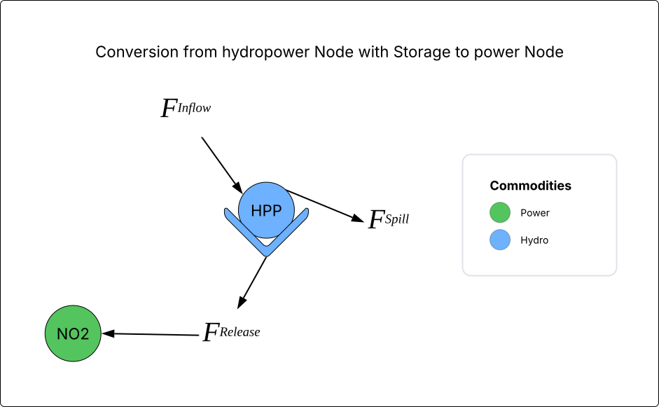

Why do we have high-level and low-level components in the core model?
The components describe the main elements of the modelled energy systems in FRAM. We have high-level and low-level components in the core model, which are all Python objects.
High- and low-level representations of energy systems
The high-level components are for instance demand, transmission and hydropower components that are described in input data to FRAM. The high-level descriptions let analysts work with recognizable domain objects. All high-level components in FRAM, e.g. Demand, have the method self.get_simpler_components(), and most also have self.create_flow(). These translate the high-level component to low-level components (flow and node), to be used in modelling.
The low-level descriptions express the same energy system components in a highly abstract and generic form. This enables generic algorithms that minimize code duplication and simplify data manipulation, especially convenient for developers. Read below to understand why this decomposition is so useful.
Why convert between high-level and low-level?
The main advantages of converting between high-level and low-level components are possibility to write more generic code for data calculations and compatibility with energy system models that already operate with low-level components:
-
More generic code: possibility to decompose high-level components into more generic flows and nodes allows writing much more generic algorithms for data calculations and avoiding duplicating code. For example, instead of writing the same data processing functions for PowerPlant and Demand components (because they have many similar features), you can write a generic function for flow and node that will apply for all components of the same type. This is especially useful for developers who want to work with FRAM and build tools for analysts.
-
Compatibilty with abstract energy market models: several models, like JulES, SpineOpt and PyPSA, already use a low-level generic description of the system. FRAM supports such types of models better because the data can be easily “translated” into the low-level representation.
Low-level components: flow and node
Nodes and flows are the main building blocks in FRAM's low-level representation of energy systems.
A node represents a point where a commodity can possibly be traded, stored or just pass through. Examples of commodities in FRAM are power and hydro. Nodes can represent a physical point, but also an abstract energy system component, for instance a bidding zone.
The transport or flow of a commodity between nodes is represented by flows. Flows represent movement through the energy system, for instance power being produced in a power node (see the first example below), or conversion between hydro and power commodities (see the second example below). A flow can be connected to one or more nodes.
In FRAM, flows have attributes called arrows that determine direction of the movement. Several arrows can be connected to a single flow, where each describe the contribution from the flow into a node. The arrows have a direction to determine whether it is input or output to the node, and parameters for the contribution of the flow to the node (conversion, efficiency and loss) (see the second example below). In FRAM, arrows are also Python-objects with their own attributes.
How are high-level components represented as low-level components in FRAM?
Example node and two flows
Let’s take an example of solar production in bidding zone Germany. A high-level component for the total solar production in the zone can have the below attributes. To relate the solar to its location in the power system, one of the attributes is which (power) node it connects to:
{Solar:
power_node: DEU,
max_capacity: 70 GW,
min_capacity: None,
variable_operation_cost: None,
production: [0.8 GWh/h, 0.9 GWh/h, 0.9 GWh/h, ... ],
…
}
FRAM can decompose the same solar production of the power commodity feeding into the DEU bidding zone into the low-level components flow and node.
The below figure illustrates this – the bidding zone DEU is represented as a power node for Germany, solar power production is as a flow into the node and demand is a flow out of the node. Below, low-level components of the FSolarDEU flow and the DEU node are shown.

In this example case, the low-level representation of the DEU solar production as a flow would be as follows:
{Flow:
main_node: DEU,
max_capacity: 70 GW,
min_capacity: None,
startupcost: None,
volume: [0.8 GWh/h, 0.9 GWh/h, 0.9 GWh/h, ... ],
arrow_volumes*: {
power_arrow: [0.8 GWh/h, 0.9 GWh/h, 0.9 GWh/h, ... ]
},
}
* arrow_volumes are the same as volume in this example because the flow has just one arrow
{Node:
commodity: Power,
is_exogenous (to simulate the node endogenously or use a pre-set price): False,
price**: [3 EUR/MWh, 2.4 EUR/MWh, 1 EUR/MWh, …],
storage: None,
}
* Price is the result of the optimisation sent back to the core model
Changes made inside the attributes in low-level components will also appear in high-level components.
Example flow and node with storage
Here is another example of decomposition of high-level components with storage - a hydropower plant with a reservoir. In FRAM, there are Python-objects called Storage() that have their own attributes and are connected to a node of the commodity.
The figure below illustrates a low-level representation of a simple power system in NO2 with both power and hydro commodities. A hydropower plant (HPP) with a reservoir is connected to the bidding zone NO2. Because the hydropower reservoir has storage of the hydro commodity, the plant is represented as a node with storage and a flow towards the power node. In this case, the flow FRelease from HPP to NO2 is a conversion between hydro and power.

The HPP node with storage above could have a low-level representation like:
{Node:
commodity: Hydropower,
is_exogenous: False,
price: [0.5, 1, 2, ...],
storage: Storage(),
},
where the storage component would have attributes like:
{Storage:
capacity: 1,000 MW,
volume (storage filling)*: [10, 25, 2, ...],
loss: 0.01,
reservoir_curve (water level elevation to water volume): [0.10, 0.15, 0.14, ...],
initial_storage_percentage: 0.72,
...
}
* Storage filling can be predefined or the result of the optimisation sent back to the core model